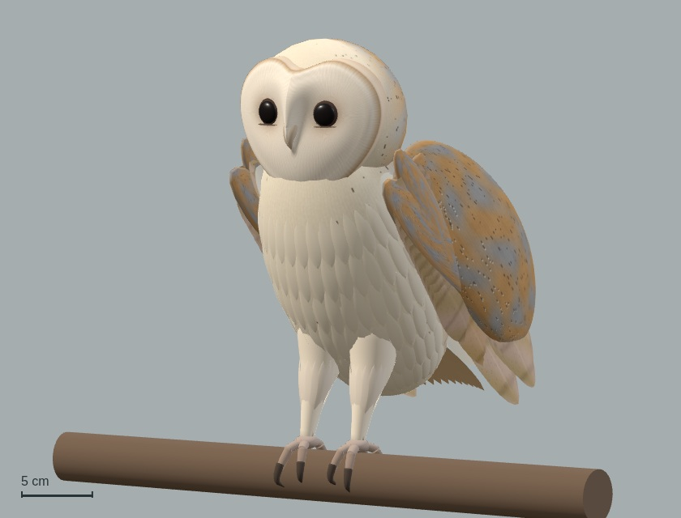
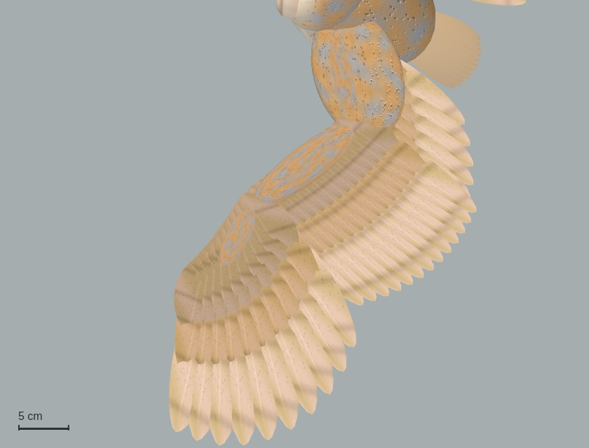
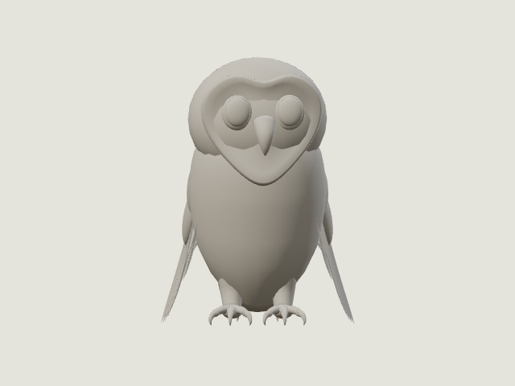

Creature Lab / Anatomy and flight architectureBarn Owl A.1
Tyto albaReview the silhouette, facial disc, folding wing and perch contact. The material pass identifies feather groups. Final surface work awaits anatomy and motion approval.
Anatomy comparison
 Wild plumage and folded profile · Steven Ward
Wild plumage and folded profile · Steven Ward
Procedural specimen · perchedIn the Lancashire photograph, the dark eyes sit inside the pale disc, the beak emerges through its central ridge, and the folded wing covers much of the flank. A.1 reproduces these landmarks. The cheek rim and shoulder layers still have clearer edges than the soft overlap in the photograph.
 Birmingham flight study · Tony Hisgett
Birmingham flight study · Tony Hisgett
A.1 · dorsal feather arrangementThe photograph shows the change in direction at the wrist, overlapping vanes, and feet trailing behind the breast. In A.1, ten hand primaries fan beyond each wrist. Thirteen forearm secondaries and their coverts move with the ulna. The elbow folds toward the flank and the wrist reverses direction as the wing closes.
Photographs reproduced at reduced size under CC BY 2.0. Steven Ward, Barn Owl, Lancashire · Tony Hisgett, Barn Owl 2.
Prototype audit


The previous 0.6 m catalog specimen used a six-ring facial plate, separate eye ovals, a two-link generic wing, a rigid three-forward foot and seven tail vanes. The open and closed wing shared fixed feather directions. Perch and Look used a sinusoidal head pivot. Fly added a uniform wingbeat and vertical bob. Fold used the same target as Perch. The prototype had no blink, contact sequence or bank control.
A.1 keeps the procedural Specimen lifecycle, shared sweep geometry, cambered feather construction, batched plumage, LOD switching, studio lights and renderer. The owl adds a continuous orbital surface, separate lower lids, three neck pivots, twelve rectrices, paired forward and rear gripping digits, and an articulated wing with feather-specific fold targets. Plumage colour and fine markings use small generated albedo maps.
Matched plates
Each pair shares an orthographic camera, pose, scale and lighting. The bars measure distance in the model plane. The perch is approximately 3.6 cm in diameter. Perched height measures 31.6 cm and the open span measures 93.1 cm.
Front
Side
Rear
Three-quarter
Top
Wings fully extended
Wings folded
Perched posture
Facial disc
Talon contact
Wing feather organization
Identify the feather groups
Motion recordings
Four-second takes at 20 fps, animated at a fixed 60 Hz. The first take switches from quiet perching to a moving gaze target. The flight study uses a roughly 2.55 Hz powered wingbeat. The camera follows a roost circuit with a 2.4 m radius. Banking varies the stroke on either side and steers the tail. Landing completes the arc back to the original perch, extends the feet, closes the toes and folds the wings.
Perched idle and head tracking
ClayMaterial
Takeoff and release
ClayMaterial
Powered flight
ClayMaterial
Gliding and banking
ClayMaterial
Landing and gripping
ClayMaterial
Rendering cost
| Level | Triangles | Draw calls | Median ms | 95th % ms |
|---|
| 0 | 57,684 | 85 | 165.6 | 249.2 |
| 1 | 31,540 | 85 | 108.4 | 166.8 |
| 2 | 11,944 | 73 | 77.5 | 87.1 |
One fully visible owl, lit studio, 840 × 640 pixels. Each row samples 32 animated draws with a synchronous one-pixel readback in Chromium on ANGLE SwiftShader. These elapsed times include software rendering and synchronization. Hardware GPU and open-world frame budgets remain unverified.
Five procedural RGBA8 albedo maps occupy 1,791,316 bytes including mipmaps at every LOD. Geometry and feather sampling simplify with distance. LOD2 also drops the small upper and underside covert layers. Raw measurements.